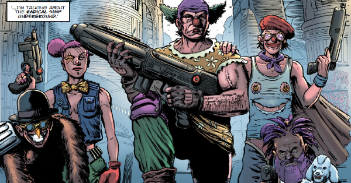

Mega-City One has always been a city of crazes and sub-groupings, whether it be Otto Sump's Ugly Clinics, the League of Fatties, Blobs, bat-gliders, sky-surfers, Pieromania or simping: dressing and behaving in a clown-like manner for no discernable purpose. Probably the most famous simp would be Jack Point, The Simping Detective - actually an undercover Wally Squad Judge.
Art by Steven Austin & Chris Blythe
| Story Title | Parts | Pages | w indicates a wraparound coverCovers | Year(s) | Issues | Writer | Artist | Colourist | Letterer |
|---|---|---|---|---|---|---|---|---|---|
From Judge DreddSimp | 1 | 8 | 0 | 1987 | 527 | Alan Grant John Wagnervarious | Cliff Robinson | <-- 2pp, [b&w] | Tom Frame |
From Judge DreddSimp About the House | 1 | 9 | 0 | 1988 | 574 | Alan Grant John Wagnervarious | Cliff Robinson | <-- 2pp, [b&w] | Tom Frame |
From Judge DreddMondo Simp | 2 | + 2 credit pages46 | M3.15: Paul Marshall 1 | 1996 | M3.15-M3.16 | John Smith | Paul Marshall | Dondie Cox | Tom Frame |
From Judge DreddSimp City | 2 | 12 | 0 | 1998 | 1119-1120 | John Wagner | Peter Doherty | <-- | Tom Frame |
From Judge DreddOne of Our Simps Is Missing | 1 | + 1 credit pages12 | 0 | 2002 | M4.14 | Gordon Rennie | Anthony Williams | <-- | Tom Frame |
From Judge DreddSimply Normal | 5 | 30 | 2207: Cliff Robinson & Dylan Teague 2211: Steven Austin & Chris Blythe 2 | 2020 | 2207-2211 | Kenneth Niemand | Steven Austin | Chris Blythe | Annie Parkhouse |
| year | episodes | pages |
| 1985 | 0 | 0 |
| 1986 | 0 | 0 |
| 1987 | 1 | 8 |
| 1988 | 1 | 9 |
| 1989 | 0 | 0 |
| 1990 | 0 | 0 |
| 1991 | 0 | 0 |
| 1992 | 0 | 0 |
| 1993 | 0 | 0 |
| 1994 | 0 | 0 |
| 1995 | 0 | 0 |
| 1996 | 2 | 46 |
| 1997 | 0 | 0 |
| 1998 | 2 | 12 |
| 1999 | 0 | 0 |
| 2000 | 0 | 0 |
| 2001 | 0 | 0 |
| 2002 | 1 | 12 |
| 2003 | 0 | 0 |
| 2004 | 0 | 0 |
| 2005 | 0 | 0 |
| 2006 | 0 | 0 |
| 2007 | 0 | 0 |
| 2008 | 0 | 0 |
| 2009 | 0 | 0 |
| 2010 | 0 | 0 |
| 2011 | 0 | 0 |
| 2012 | 0 | 0 |
| 2013 | 0 | 0 |
| 2014 | 0 | 0 |
| 2015 | 0 | 0 |
| 2016 | 0 | 0 |
| 2017 | 0 | 0 |
| 2018 | 0 | 0 |
| 2019 | 0 | 0 |
| 2020 | 5 | 30 |
| 2021 | 0 | 0 |